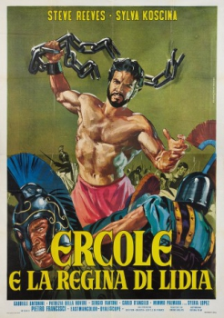

Also known as:Ercole e la regina di Lidia (original title)
Country:Italy, 105 minutes
Spoken languages:Spanish, Italian
Genres:Adventure, Fantasy
Director(s):Pietro Francisci, Mario Bava
Writer(s):Pietro Francisci, Sophocles, Aeschylus, Ennio De Concini
Video Codec:Unknown
Number: 1495


Certification:G
Storyline:
While negotiating peace between two brothers contesting the throne of Thebes, an amnesiac Hercules is seduced by the evil Queen Omphale.
Cast:

Medium: Original DVD,
Comments: Part of: Sci-Fi Classics - 50 Movies & Part of: Wrath of the Sword - 20 movie collection
Loaned: No
Aspect ratio: Unknown